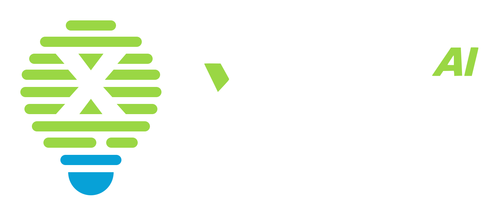

AI FOR ALL / X-LAB AIv1.2 · 互动演示01 / 1302 / 开放的故事
开放模型的力量
中国贡献，正在成为全球开发者再创造的基础。
所跟踪模型的累计下载量 截至 2026.03
Hugging Face · ATOM 所跟踪样本 · 按发布机构总部归属
70%新增衍生模型
新增衍生模型
基于中国模型
2026 年 2 月 · ATOM 样本
 阿里巴巴Qwen
阿里巴巴Qwen 深度求索DeepSeek
深度求索DeepSeek 智谱 AIGLM
智谱 AIGLM 月之暗面Kimi
月之暗面Kimi 腾讯混元 Hunyuan
腾讯混元 Hunyuan代表性模型系列示意，不构成排名。开放程度与许可因版本而异；下载量不等于使用人数。来源：ATOM Report v2，2026-05-25。